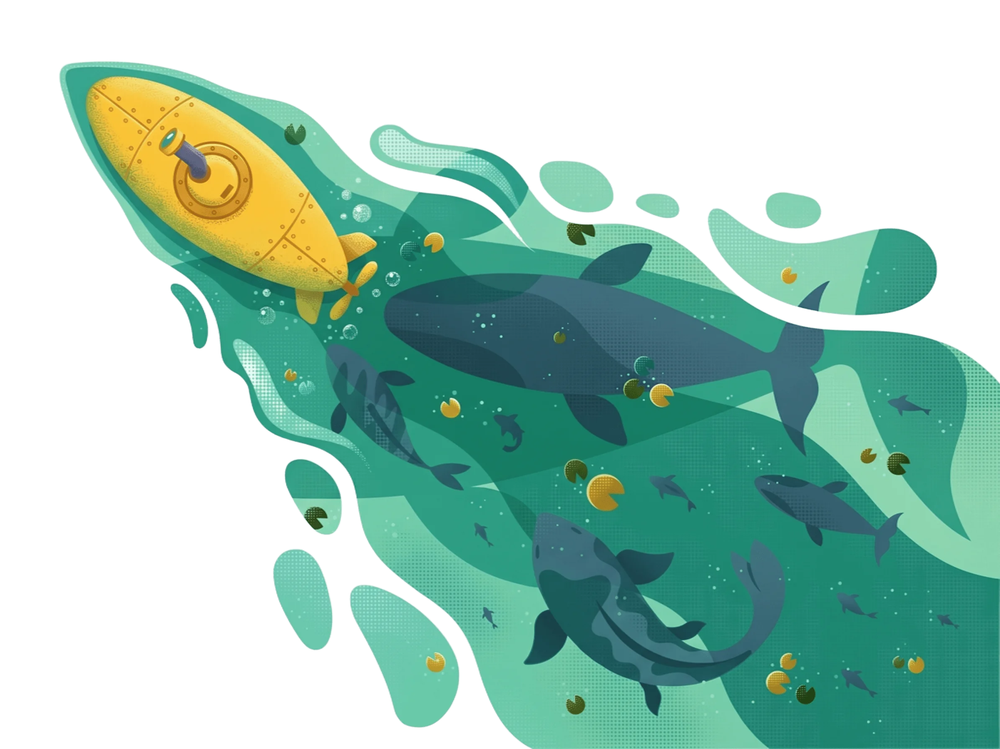
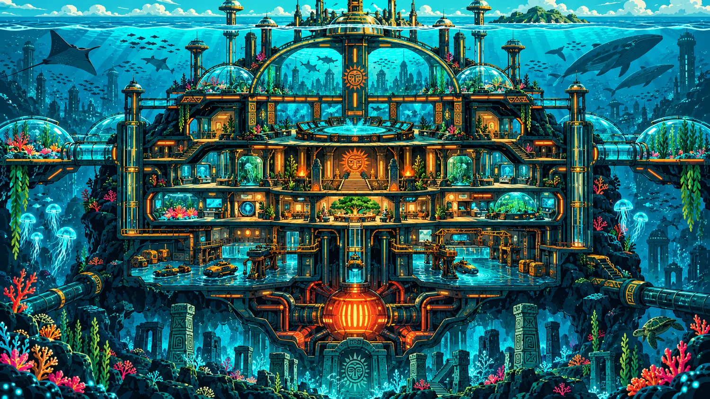
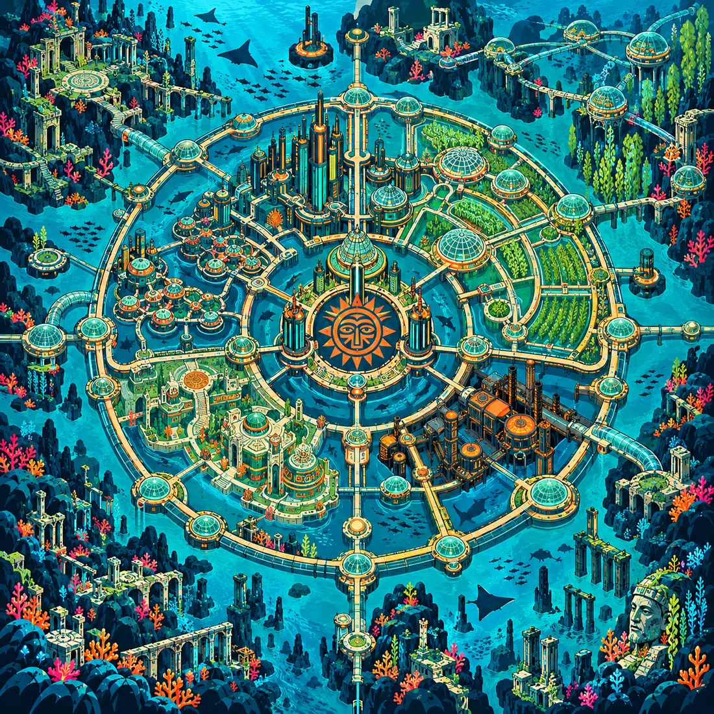
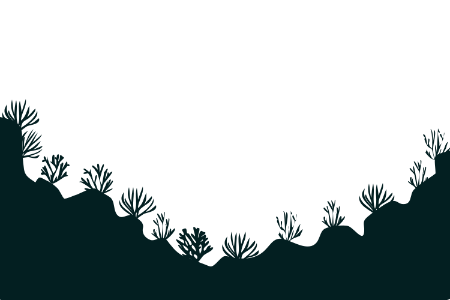

KORA
TRANSMISSÃO //
Aviso de manutenção preventiva no Setor 4. Fechem as comportas secundárias às 18h.
Expira em

Conecte-se à cidade submarina, descubra seus espaços e explore um novo mundo abaixo da superfície.

Quando a superfície ficou inabitável, gente das periferias e dos povos originários da América Latina desceu para o fundo do mar. Levaram o saber antigo de cuidar da terra e aprenderam a construir sob pressão. Dessa mistura nasceu Atlântida, que seus moradores chamam de Ñandeyaku: nossa água.
Vinte e um anos depois, o ar e a água estão no limite. Mineradoras sem dono rasgam o leito do oceano e ameaçam as cúpulas. Este portal liga os bairros isolados, chama ajuda e organiza a resistência ecológica.
Em 2154 os últimos portos fecharam. Ninguém mais podia viver na superfície, e as comunidades das periferias e dos povos originários começaram a procurar abrigo no fundo do mar.
Em 2161 famílias inteiras desceram juntas, com sementes, ferramentas e o saber de cuidar da terra. A descida foi decidida em assembleia, bairro por bairro.
Em 2168 as primeiras algas deram ar suficiente para selar as cúpulas. Nesse dia a cidade ganhou nome: Ñandeyaku, nossa água.
Em 2189 as mineradoras sem dono começaram a rasgar o leito do oceano. A rádio da Casa das Vozes abriu um canal para avisar os bairros, e dali nasceu a resistência ecológica.
Toque num ponto do mapa para conhecer o lugar.

Os números abaixo mudam a cada maré. Quando um entra em risco, o portal chama a comunidade para ajudar.
Conte o que está acontecendo. O Chasqui corre pelos corredores e volta com o nome de quem pode ajudar.

“TODA MENSAGEM É UMA COMPORTA ABERTA ENTRE NÓS.”
TRANSMISSÃO //
Aviso de manutenção preventiva no Setor 4. Fechem as comportas secundárias às 18h.
TRANSMISSÃO //
Achei cabos coaxiais intactos perto da carcaça do petroleiro. Quem precisar, apareça na oficina.
TRANSMISSÃO //
Roda de histórias hoje à noite, no Coração do Sol. Venha ouvir e compartilhar as memórias da nossa cidade.
TRANSMISSÃO //
Nova safra de algas com rendimento 15% superior de oxigênio. O ar vai ficar mais limpo.
TRANSMISSÃO //
Canal de chamados aberto. Se sua cúpula estiver perdendo pressão, avise imediatamente aqui.
Não há mensagens ativas no mural neste momento.
“GUARACI ESTÁ OUVINDO. QUAL É O SEU RECADO?”